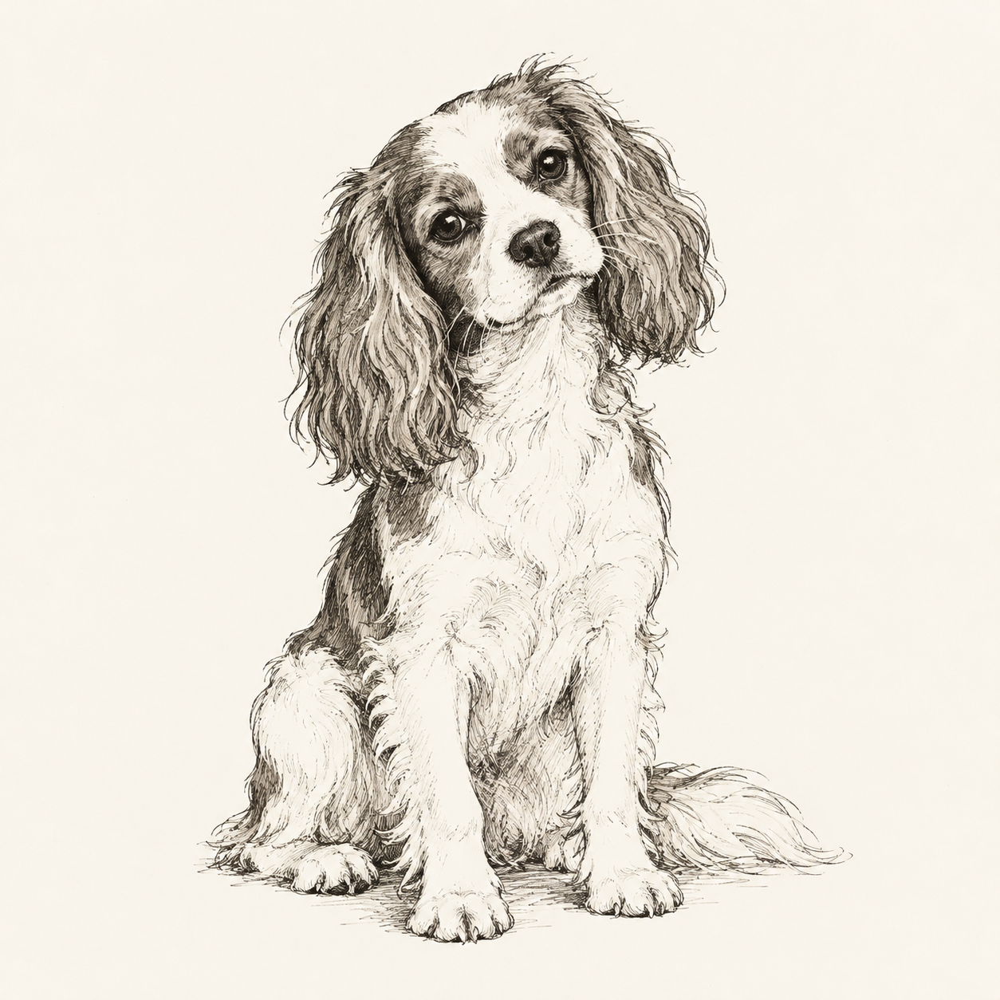

长篇科学小说 / 完整在线阅读 一心问道 著
一心问道 著
一心问道 著RESEARCH · WRITING · CREATION
华南理工大学博士在读 智能生物解析
在复杂的生命里，
寻找清晰的线索。
关心数据怎样帮助我们理解生命，也关心一个问题怎样被讲清楚。在这里，记录研究中的思考，分享科学写作，偶尔走进小说与影像。
保持好奇，慢慢求证。

01 / RESEARCH INTERESTS
研究方向：智能生物解析
关注生命数据、计算方法与可解释的科学问题。
生命系统留下的线索，分散在不同尺度的数据里。我感兴趣的是：怎样从这些线索中识别稳定的模式，又怎样把一个计算结果，接回一个值得追问的生物学问题。
以下是我关注的三个问题。
点击切换，了解各自的思考路径。
从单个变量，看到变量之间的联系
关注微生物、宿主及脑科学相关数据中的关系与差异。除了某个指标的升降，也希望理解多个特征怎样共同变化，以及这些模式在不同背景下是否仍然成立。
从研究问题出发，选择合适的方法
关注人工智能与生物信息学的结合，探索复杂数据的表示、整合与分析。重视清晰的比较、独立验证和可复现的过程，让方法的价值体现在它能回答的问题上。
把一个结果，放回证据与背景之中
对模型给出的答案保持兴趣，也保留追问。关注结果是否稳定、解释是否充分，以及还有哪些可能的影响因素；尝试把关联、预测与机制之间的边界说清楚。
02 / SELECTED WORK & WRITING
有些问题写进研究，有些写成文章。
还有一些，慢慢长成了故事。
一心问道 著微信公众号
分享生物信息学、人工智能与交叉研究中的知识、方法和思考。把读过的、用过的、反复想过的问题，整理成可以继续讨论的文字。
55万＋累计阅读量
可在微信内搜索公众号名称。
文字之外
最近开始探索 AI 视频制作，琢磨一个画面怎样建立气氛，一段节奏怎样承接情绪。让文字走向影像，也是重新理解故事的一种方式。
读一篇创作随笔03 / FIELD NOTES
关于研究、表达与创作的几则短记。
写下来，也给下一次思考留个起点。
04 / A LITTLE ABOUT ME
你好，我是一心问道。
华南理工大学博士在读，研究方向为智能生物解析。
对脑科学、神经科学和计算生物学抱有持续的兴趣。喜欢追问一个结果从何而来，也喜欢把零散的线索整理成更清晰的认识。研究之外，写公众号，读一些书，最近也开始尝试小说与 AI 视频。
这个网站是一个慢慢整理的书桌：一边放研究中的问题，一边放尚在打磨的文字与作品。希望每次回来，都能多留下一点值得分享的东西。
清楚的解释 / 有耐心的讨论 / 好故事 / 小狗
LET’S KEEP THE CONVERSATION GOING
欢迎交流智能生物解析、科学写作，以及文字与影像创作。